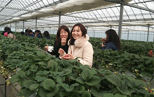

|
|
|||
|
2月25日、県内の協同組合組織の女性同士が活動を交流する、JAと生協の早春交流会が吉見町のフレサ吉見とJA埼玉中央直売所周辺で開催され、意見交換会、いちご生産者訪問、直売所の学習と見学がおこなわれました。JA埼玉県女性組織協議会の見川せつ子会長をはじめ3組合17人と、生協からは、滝澤玲子生協ネットワーク協議会会長はじめ5生協と事務局27名が参加しました。
1．意見交換 はじめに、JA女性組織協議会の見川せつ子会長が、「JA女性協は食と農を基軸とした活動をおこなっています。今回の交流会では女性として、協同組合の一員として、意見交換を通じて相互理解を深めましょう」と歓迎の挨拶をされました。 つづいての交流会では、活動紹介としてJA女性協議会、生協ネットワーク協議会よりそれぞれの活動を紹介しました。 JA女性協議会
生協ネットワーク協議会 「さいたまの生協」を使い、協議会の内容について説明されました。あわせて、協議会に参加している各生協からそれぞれ活動紹介されました。 ―テーブル交流― 参加者が7つのテーブルにわかれ、日ごろの活動や地産地消について、生産者と消費者の立場を超えて話し合い、交流を深めました。昼食交流の時間には、米粉に関する簡単な学習、第3回協議会で審査をおこなった「米消費拡大レシピ」の結果発表とレシピが紹介されました。
2．イチゴ生産者のハウスを見学し、交流しました フレサよしみの近くにあるイチゴ生産者の今西俊明さんを訪問し、交流とハウスの見学をおこないました。 3．JA埼玉中央吉見直売所を訪問し、見学しました  吉見直売所所長の河上さんから、吉見直売所の概要について説明を聞き、その後、直売所に移動し見学をおこないました。 所長の河上さんは現在の課題として「お米の購入が少なくなっています。 地元のお米を購入していただけるにはどうしたら良いかを考え続けています」と話されました。 |